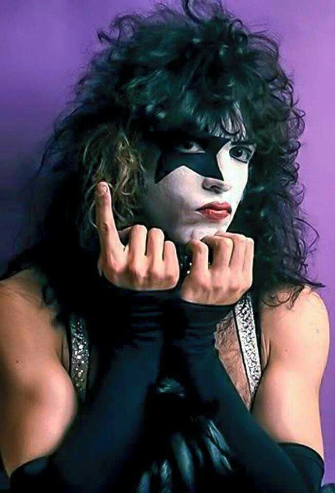

Paul Stanley — ⭐ The Starchild


Quem é?
Paul Stanley, nome artístico de Stanley Bert Eisen, nasceu em 20 de janeiro de 1952, em Nova York, Estados Unidos. é cantor, guitarrista, compositor e um dos fundadores do KISS.
Antes do KISS
Desde jovem, Paul demonstrava interesse pela música. Durante a adolescência, começou a tocar guitarra e cantar, participando de pequenas bandas.
Na década de 1970, conheceu Gene Simmons. Os dois começaram a trabalhar juntos e formaram a banda Wicked Lester. Apesar de o projeto não ter alcançado o sucesso esperado, a experiência foi importante para a criação do KISS.
Entrada no KISS
Em 1973, Paul e Gene começaram a montar uma nova banda. Depois da entrada de Peter Criss e Ace Frehley, nasceu a formação original do KISS.
Paul assumiu a guitarra e os vocais e se tornou uma das principais figuras da banda.
The Starchild
Paul criou o personagem The Starchild, representado por uma estrela ao redor do olho.
O personagem combinava com sua personalidade de palco e ajudou a criar a identidade visual do KISS.
Importância para a banda
Paul participou da composição de várias músicas importantes do KISS. Também ficou conhecido por sua presença de palco, seus vocais e sua interação com o público.
Depois
Além do KISS, Paul desenvolveu projetos solo e trabalhou com outras formas de arte, incluindo pintura.
Ele permaneceu como um dos principais integrantes do KISS ao lado de Gene Simmons e participou da turnê de despedida da banda, encerrada em 2023
gene simmons
ace frehley
peter criss
voltar